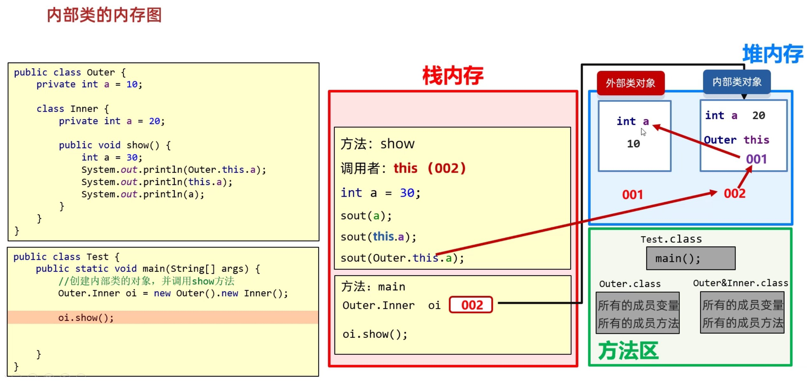

03_Java接口和内部类
一、接口
0. 引入
兔子：吃草 青蛙：吃虫子、蛙泳 狗：吃骨头、狗刨
在本案例中，兔子、青蛙和狗都有吃的行为，可以抽取到父类动物中；而兔子不会游泳，青蛙和狗会游泳，接口可以定义这个行为让类来实现

1. 接口概述
接口是一种规则，是对行为的抽象
2. 接口定义格式
接口用关键字 interface 定义
1 | |
3. 接口成员
3.1 基本特征
- 成员变量
- 只能是常量
- 默认修饰符：
public static final（默认会加）
- 没有构造方法，接口不能被实例化
- 成员方法
- 只能是抽象方法
- 默认修饰符：
public abstract（默认会加）
JDK7及以前：接口只能定义抽象方法 JDK8新特性：接口中可以定义有方法体的方法（默认、静态） JDK9新特性：接口中可以定义私有的方法（私有）
3.2 新特性
3.2.1 JDK8 以后
- 允许在接口中定义默认方法，需要使用
default修饰- 作用：接口升级时实现类不需要重写
- 默认方法不是抽象方法，不强制重写，但是如果被重写，重写时需要去掉
default关键字 default不能省略- 如果实现了多个接口，多个接口中存在相同名字的默认方法，实现类必须对该方法重写，不然编译器不知道执行哪个方法
- 允许在接口中定义静态方法，需要使用
static修饰- 静态方法不能被重写
- 静态方法只能通过接口名调用，不能通过实现类名或者对象名调用
static不能省略
3.2.2 JDK9 以后
- 接口中的共性代码抽取到私有方法中，不对外界使用
- 普通的私有方法供普通方法调用
- 静态的私有方法供静态方法调用
4. 接口特征
4.1 接口与类的关系
- 类和类的关系：
- 继承关系，只能单继承，不能多继承，但是可以多层继承
- 类和接口的关系：
- 实现关系，可以单实现，也可以多实现，还可以在继承一个类的同时实现多个接口
- 接口和接口的关系
- 继承关系，可以单继承，也可以多继承
1 | |
4.2 接口的实现和意义
类与接口的关系为实现关系，即类实现接口，该类可以称为接口的实现类，也可以称为接口的子类。实现的动作类似继承，格式相仿，只是关键字不同，实现使用
implements关键字
接口的实现类（子类）：
- 要么重写接口的所有抽象方法
- 要么实现类也声明为抽象类
意义：接口体现的是一种规范，接口对实现类是一种强制性的约束
4.3 接口多态
- 当一个方法的参数是接口时，可以传递接口所有实现类的对象
- 接口不能创建对象，但是可以声明接口变量
- 接口变量必须引用实现了接口的类对象
1 | |
如同用 instanceof
检查一个对象是否指向某个类一样，也可以用来检查一个对象是否实现了某个接口
1 | |
5. 适配器设计模式
当一个接口中抽象方法过多，但是只需使用其中一部分的时候，重写大量不需要的方法非常繁琐，可以使用适配器设计模式解决
- 编写中间类
XXXAdapter实现对应接口 - 对接口中的抽象方法进行空实现
- 让真正的实现类继承中间类，并重写需要使用的方法
- 为了避免其他类创建适配器对象，适配器类用
abstract修饰
二、内部类
1. 内部类概述
在一个类的里面再定义一个类
- 内部类表示的事物是外部类的一部分
- 内部类单独出现没有任何意义
1 | |
使用场景：一个事物内部还有一个独立的事物，内部事物脱离外部事物无法独立使用
- 汽车的发动机
- 人的心脏
2. 成员内部类
2.1 成员内部类特点
- 定义在成员位置，无
static修饰的内部类 - 成员内部类里面，
JDK16开始才可以定义静态变量
2.2 创建成员内部类对象
- 成员内部类非私有时直接创建对象
- 外部类中编写方法，对外提供
private内部类对象
1 | |
创建内部类对象中，对象中隐含一个 外部类.this
记录外部类对象的地址值

3. 静态内部类
3.1 静态内部类特点
- 定义在成员位置，有
static修饰的内部类 - 静态内部类是特殊的内部成员类
3.2 创建静态内部类对象
静态内部类只能访问外部类中的静态变量和静态方法，如果要访问非静态的需要创建对象
1 | |
3.3 调用静态内部类方法
- 非静态方法：先创建对象，用对象调用
- 静态方法：
外部类.内部类.方法名()
4. 局部内部类
- 定义在方法中的类，类似方法里的局部变量
- 外界无法直接使用，需要在方法内部创建对象使用
- 该类可以直接访问外部类的成员，也可以访问方法内的局部变量
5. ☆匿名内部类☆
5.1 匿名内部类特点
- 隐藏了名字的内部类
- 可以写在成员位置，也可以写在局部位置
1 | |
5.2 匿名内部类使用场景
- 如果类只需要使用一次，就可以使用匿名内部类
- 当一个方法的参数是接口或类时，可以传递匿名内部类
1 | |
03_Java接口和内部类
http://example.com/2023/07/08/coding/Java开发/语言基础/03_接口和内部类/03_Java接口和内部类/